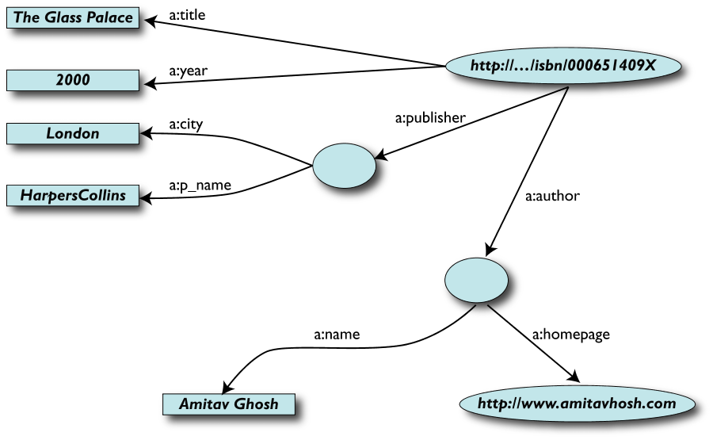
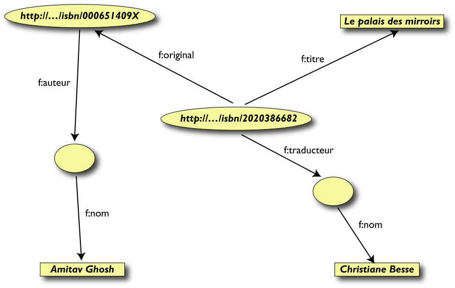

Ringraziamenti
- Questa presentazione è basata in gran parte
sul materiale di presentazioni tenute da Ivan Herman, W3C
Semantic Web Activity Lead
- Il materiale di questa presentazione può
essere riutilizzato nel rispetto delle leggi sul
copyright e delle regole del W3C
- Giuseppe Cabrino ha registrato la presentazione che
è accessibile su YouTube:
Contenuto
- Il Web Semantico: principi e tecnologie
- Searching the Web… un esempio
- RDF
- Linked Data
Semantic Web e data integration

I vantaggi del processo di astrazione…
- …la rappresentazione come grafo è
indipendente dalla struttura reale dei
dati (per esempio nel daabase)
- …modifiche apportate agli schemi locali del
database, alle strutture XHTML, etc. non hanno
influenza a livello generale, ma solo a livello del
passo di esportazione dei dati (schema
independence)
- …è possibile aggiungere nuovi
dati, ulteriori connessioni, senza soluzione di
continuità, indipendentemente dalla
struttura delle altre fonti di dati
Dal dataset A, come
grafo…

Dal dataset F…

Merging dei dati

Merging delle risorse identiche

Le Query più semplici…
- L'utente dei dati F
può ora formulare query del tipo: "donnes-moi le titre de
l'original" o "give me the title of the original"
- Questa informazione non è nel dataset
F…
- …ma può essere
ritrovata grazie al merging con il dataset A!
- …ma si può ottenre di più
utilizzando informazione aggiuntiva…
Grazie alla conoscenza “extra”…
…possiamo formulare delle query più ricche!
- L'utente del dataset F
può ora formulare domande del tipo:
- donnes-moi la page
d'accueil de l'auteur de l'original
- give me the home page of the
original's author
- I dati necessari non sono nel dataset F…
- …ma sono stati resi disponibili grazie a:
- merging dei dataset A e F
- aggiunta di tre proposizioni semplici come
ulteriore “collante”
- utilizzo di terminologie esistenti come
componente del “collante”
…e combinare le informazioni con alri dataset: con
Wikipedia…
…e con Google Maps
Sorprendente?
- In realtà no
- È esattamente quanto avviene normalmente a
tutti gli utenti del Web (ma in questo caso grazie a un
processo automatico)
- La differenza: è necessario un po'
più di rigore (per es. dare un nome alle
associazioni) perché le macchine possano
riuscirci.
In realtà cosa abbiamo fatto?
- Abbiamo combinato dataset diversi
- ognuno di essi può provenire da un
qualunque sito web
- possono avere originariamente formati
differenti (MySQL, fogli excel, XHTML, etc)
- possono avere nomi diversi per le
relazioni (multilinguismo)
- Li abbiamo potuti combinare perché avevano
lo stesso URI (l'ISBN nell'esempio)
- Possiamo aggiungere conoscenza addizionale,
utilizzando terminologie comuni definite dalle varie
comunità
- Di conseguenza, è stato possibile identificare
e utilizzare nuove relazioni
-
… e il processo può
continuare…
Cosa ci fornisce il Semantic Web?
- Le tecnologie per rendere possibile questa
integrazione! Per esempio:
- un modello astratto per i grafi e le
relazioni tra dati RDF
- mezzi per estrarre informazione RDF da
pagine XML (per es. XHTML): GRDDL
- mezzi per aggiungere informazione
strutturata a pagine XHTML: RDFa
- un linguaggio di query per interrogare i
grafi: SPARQL
(SPARQL Protocol and
RDF Query Language)
- varie tecnologie per caratterizzare le
relazioni e assegnare una categoria alle
risorse: RDFS (RDF
Schemas), OWL (Web
Ontology Language), SKOS, Rule
Interchange Format
- in funzione della complessità
necessaria, le applicazioni possono scegliere tra
le varie tecnologie
- alcune sono relativamente semplici, con tool
tool semplici (RDFS), mentre altre richiedono
sistemi più sofisticati (OWL, Rules)
-
riuso di “ontologie”
esistenti, definite da altri (nell'esempio
precedente abbiamo usato FOAF)
- alcune tecnologie sono stabili, mentre altre sono
ancora in fase di sviluppo
Il ruolo del Semantic Web nel processo di integrazione

L'architettura del Semantic Web

-
Il Semantic Web …
-
- è un'infrastruttura basata su metadati per
poter svolgere ragionamenti sul Web
-
estende, non sostituisce il web attuale
-
I metadati sono:
-
- Informazioni, elaborabili automaticamente
(machine understandable)
-
vocabolari (ontologie) condivisi
- un data model condiviso
-
Gli standard tecnologici
-
…solo un aspetto tecnico
Elementi di RDF
Resource Description Framework (RDF) è per il
Semantic Web quello che HTML è stato per il
Web

Cosa è RDF?
- Strumento base per codifica,
scambio e riutilizzo di metadati
strutturati
- Consente l'interoperabilità tra
applicazioni che si scambiano sul Web informazioni
machine-understandable
- Modello generale basato su triple, dette
"triplets", o "statement"
("proposizioni", "dichiarazioni") con un formato
“machine readable” (quindi
comprensibile dalle macchine) come RDF/XML,
Turtle, n3, RXR)
-
ed è tutto qui! (semplice, dopo tutto
 )
)
- La sintassi (RDF/XML, Turtle) è semplicemente
sintassi
- La cosa importante sono il modello
sottostante e i concetti
Triple RDF
- Una tripla RDF
(s,p,o) è un
un collegamento etichettato (labelled connection) tra
due risorse
- Le triple RDF sono anche dette "triplets", o
"statement"
- Le risorse
s, p,
o vengono anche dette:
"subject", "predicate",
"object",
oppure
"subject", "property",
"object"
(in italiano: "soggetto",
"predicato", "oggetto")
- Le triple RDF formano un grafo orientato
etichettato, o "directed, labelled graph"
(è questo il modo migliore per considerarle!)
Triple RDF (cont.)
-
 Una tripla RDF
Una tripla RDF (s,p,o) è definita
in modo che:
Il ruolo fondamentale degli URI
- Gli URI hanno reso possibile il merge
-
Chiunque può creare (meta)dati su
qualunque risorsa sul Web, per esempio:
- lo stesso file XHTML può essere
annotato con altri termini
- è possibile aggiungere semantica
alle risorse Web esistenti utilizzando URI
- gli URI rendono possibile collegare (con
proprietà) i dati tra di loro
-
Gli URI sono la base del ruolo di RDF nel Web
- si può reperire l'informazione utilizzando
tool già esistenti
- per questo motivo il "Semantic Web", è il
… "Semantic Web"
Le altre tecnologie (in breve)
-
RDFS (RDF Vocabulary Description Language)
-
- RDF è un linguaggio universale
per descrivere le risorse usando il proprio
vocabolario
- È possibile scrivere statement (triple
s-p-o) RDF sintatticamente corretti, ma
privi di senso
- RDFS consente di definire eventuali
restrizioni (es. dominio e codominio),
relazioni di classe-sottoclasse, e
supportare ragionamenti basati su processi di
inferenza
-
OWL (Web Ontology Language)
-
- RDFS è utile, ma non è in
grado di soddisfare tutti i requisiti
- Applicazioni complesse hanno ulteriori
necessità: ragionare sui termini,
costruire classi, identificare classi
disgiunte o equivalenti, etc.
- Nel Semantic Web occorre il supporto di
ontologie, per definire i concetti e le
relazioni usati per descrivere e rappresentare un
dominio di conoscenza
- In OWL si possono costruire classi a
partire da quelle esistenti, per enumerazione,
intersezione, unione, complemento, mediante
restrizioni delle proprietà (valori
ammissibili, cardinalità, simmetria,
transitività, dipendenza funzionale)
Aggiungiamo (ed estraiamo) semantica alle pagine Web
-
GRDDL

-
-
RDFa
-
Il “Web of Data”
- Il Semantic Web estende i principi del Web dai
documenti ai dati, creando un “Web of
Data”
- Dati, ontologie, vocabolari, etc, possono (anzi
dovrebbero!) venir condivisi e riutilizzati,
possibilmente a livello dell'intero Web
- RDF fornisce uno strato di astrazione per
l'integrazione dei dati sul Web
The Linking Open Data cloud diagram

Linking Open Data Project
- Obiettivo: "esporre" in RDF dataset aperti
-
Impostare link RDF tra data items appartenenti
a dataset diversi
- Impostare dei query endpoints
- Miliardi di triple, milioni di ”link“
Le quattro regole per pubblicare dati sul Web
- Use URIs as names for things
- Use HTTP URIs so that people can look up those names.
- When someone looks up a URI, provide useful
information, using the standards (RDF*, SPARQL)
- Include links to other URIs. so that they can
discover more things.
(TBL, Design Issues)
DBPedia
- The DBpedia project extracts various kinds of
structured information from Wikipedia
editions in 92 languages and combines this
information into a huge, cross-domain knowledge
base.
- DBpedia uses the Resource Description Framework
(RDF) as a flexible data model for representing
extracted information and for publishing it on the Web.
- The DBpedia knowledge base currently describes
more than 3.4 million things, out of which 1.5
million are classified in a consistent Ontology, including
312,000 persons, 413,000 places (including 310,000
populated places), 94,000 music albums, 49,000 films,
15,000 video games, 140,000 organizations (including
31,000 companies and 31,000 educational institutions),
146,000 species and 4,600 diseases. The DBpedia data set
features labels and abstracts for these 3.2 million
things in up to 92 different languages; 841,000 links
to images and 5,081,000 links to external web
pages; 9,393,000 external links into other RDF
datasets, 565,000 Wikipedia categories, and 75,000
YAGO categories. The DBpedia knowledge
base altogether consists of over 1 billion pieces
of information (RDF triples) out of which 257
million were extracted from the English edition of
Wikipedia and 766 million were extracted from other
language editions.
- Alcuni esempi:
http://www.data.gov/
http://www.linkedopencamera.it/
Qualche riferimento utile
Conclusioni
- Le tecnologie del Semantic Web (RDF, RDFS,
OWL) consentono di rappresentare,
esportare e condividere la conoscenza
in maniera interoperabile
- Il Semantic Web non è semplicemente
ricerca accademica!
- …ma il Web è nato in un ambiente di
ricerca di base
- Il W3C ha lanciato l'idea del Semantic Web
(1989 o 1999?) e dei Linked Data (2007)
- Queste idee si vanno diffondendo e sono
ormai una realtà
-
Associatevi al W3C per
essere competitivi e attori dello sviluppo